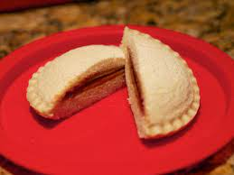

Incrustables Are Legendary

Description:
A sealed crustless sandwich is a foodstuff comprising a filling sealed between two layers of bread by a crimped
edge, with the crust subsequently removed.
Indgredients:
- Bread
- Peanut Butter
- Grape Jelly
Steps:
- Take out 2 pieces of bread and lay them out on a plate
- Grab a butter knife and the jars of peanut butter and jelly
- Using the knife, spread peanut butter on 1 slice or bread and jelly on the other
- Combine the slices together and slice on a diagonal
- Enjoy.